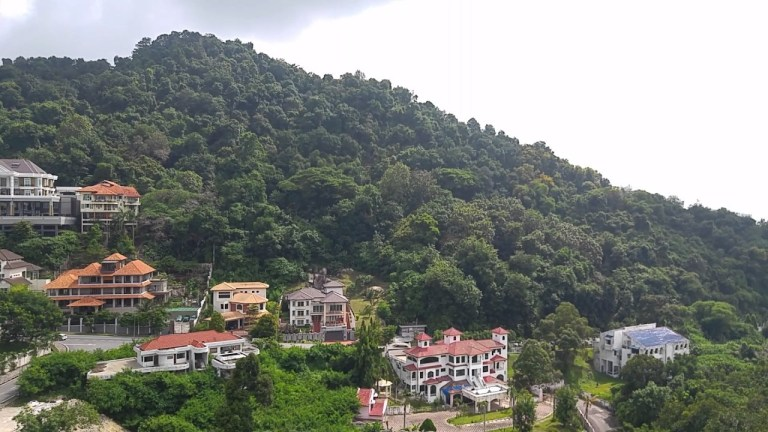
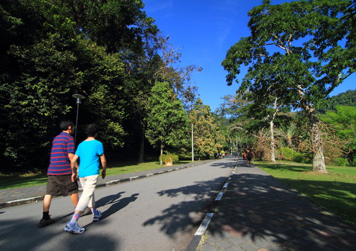
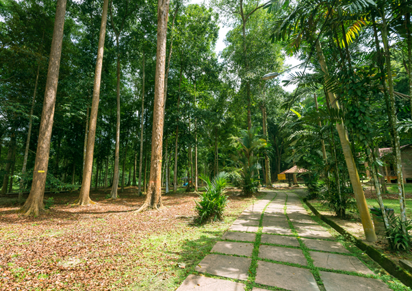

Explore the limits of your body and courage at Escape. Learn more about the fascinating world of insects at Entopia. Hike and get to know the “green side” of Penang. Bask in the tropical sun with fine sand between your toes. Experience a slowed down pace of rural life at Balik Pulau. Grab a pair of binoculars and admire the beauty of a bird in flight.
There is a thrill for every seeker here. Take a pick and dive straight in. You only live once, after all.
Bukit Jambul
Bukit Jambul is an easy climb with a staircase leading up to gratifying views of the Penang Bridge and the surrounding cityscape. Refreshments like ginger tea and longan drink are often available for hikers at the rest area here, prepared by local hikers who volunteer to carry water and equipment up to Bukit Jambul.
Address: Lintang Bukit Jambul 1, Bj Cove, 11900 Bayan Lepas, Pulau Pinang
After a full day of exploration and adventuring, it is nice to take a day off and spend it amongst the tranquil parks and gardens of Penang. Escape the heat of the city by heading uphill for cool temperatures or go for a walk with locals at their favoured park. Be rewarded doubly by hiking through a forest and ending up on a beach. Or if you are a casual botanist, learn more about local herbs, spices and fruits through inspiringly designed gardens and farms. An off day in Penang might be as rewarding as it is relaxing.
Penang Botanic Garden
Over a hundred years’ old, the Penang Botanic Gardens is where you can ‘escape’ to for a dose of greenery. It is famous for its flora and fauna namely the long-tailed macaque monkeys that roam freely in the gardens. A popular spot for joggers and those who enjoy brisk walking, its manicured lawns and pockets of nurseries boast hundreds of species of flora. There are many walking paths and tracks here including forest paths that lead to Penang Hill.
Address: Kompleks Pentadbiran,Bangunan Pavilion, Jalan Kebun Bunga, 10350 George Town, Pulau Pinang.
Penang might be well-known for its art, heritage and food but largely overlooked are its recreational forests and golf courses. Don’t be fooled by the size of the state, it packs in a lot more than one assumes. Nature lovers and sports enthusiasts who seek a break from the usual tourist activities will be pleasantly surprised by what Penang can offer.
Pockets of greenery can be easily found once visitors head away from the UNESCO heritage zones. One can breathe easy and be revitalised by a good round of golf or an invigorating hike at a recreational forest.
Bukit Panchor State Park
A well-developed state recreation park that is brimming with wildlife, a flowing river and lush greeneries. A suitable place for an adventurous nature escapade, be sure to explore the mangroves’ varied life forms, bat caves and the wetland boardwalk while here!
Address: Jalan Taman Bukit Negeri, 14300 Nibong Tebal, Penang, MALAYSIA